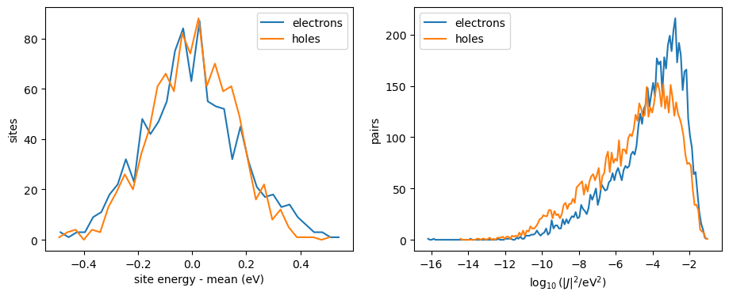
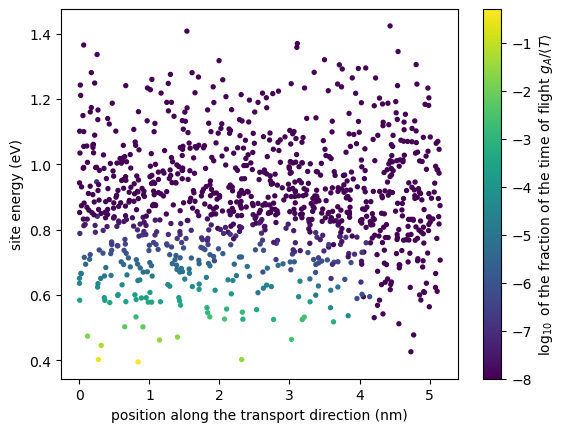
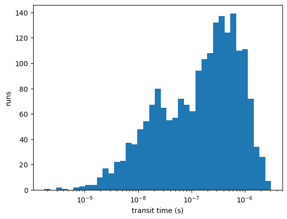

Charge transport in an amorphous thiophene morphology¶
This tutorial applies the transport calculators of VOTCA-XTP to a real morphology: 1000 thiophene molecules from a LAMMPS simulation, with site energies, electronic couplings and reorganization energies already in the state file state.hdf5 (the workflow that produces them is shown in the QMMM tutorials). We look at the energy landscape and the couplings, compute bulk mobilities of electrons and holes, and run a time-of-flight calculation that shows where the carriers are held up.
For the methods and their options on a controlled model system, see the tutorial Charge and exciton transport on a model lattice and the chapter Transport Simulations of the manual.
Requirements¶
VOTCA installed and the environment activated with
VOTCARC.bash(see the installation instructions).Python with
numpyandmatplotlib.
In Jupyter, ! runs a shell command.
[1]:
import subprocess
import numpy as np
import matplotlib.pyplot as plt
def run(command):
# run a VOTCA command quietly (raises if it fails)
subprocess.run(command, shell=True, check=True, capture_output=True)
def results(filename):
# read a 'key value unit' result file into a dictionary
values = {}
with open(filename) as f:
for line in f:
if line.startswith("#") or not line.strip():
continue
key, value = line.split()[:2]
try:
values[key] = float(value)
except ValueError:
values[key] = value
return values
Site energies and couplings¶
eanalyze writes histograms of the site energies and of the site energy differences of neighbouring pairs (here with a resolution of 0.03 eV); ianalyze writes the distribution of the couplings \(\log_{10}|J|^2\). See eanalyze and ianalyze for the options.
[2]:
!xtp_run -e eanalyze -c resolution_sites=0.03 -f state.hdf5
!xtp_run -e ianalyze -c resolution_logJ2=0.1 states=e,h -f state.hdf5
==================================================
======== VOTCA (http://www.votca.org) ========
==================================================
please read and cite: https://doi.org/10.21105/joss.06864
and submit bugs to https://github.com/votca/votca/issues
xtp_run, version 2026-dev gitid: bfb6f9e (compiled Nov 1 2026, 09:28:32)
Initializing calculator
... eanalyze
1 frames in statefile, Ids are: 10000
Starting at frame 10000
Evaluating frame 10000
Import MD Topology (i.e. frame 10000) from state.hdf5
....
... eanalyze
Using 1 threads
... ... Short-listed 1000 segments (pattern='*')
... ... ... NOTE Statistics of site energies and spatial correlations thereof are based on the short-listed segments only.
... ... ... Statistics of site-energy differences operate on the full list.
... ... excited state e
... ... excited state h
... ... excited state s
... ... excited state t
Changes have not been written to state file.
==============================================================================
Please cite the methods used in this run:
[1] Baumeier, Wehner, Renaud, Zapata Ruiz, Halver, Madhikar, Gerritsen, Tirimbo, Sijen, Rosenberger, Brown, Sundaram, Krajniak, Bernhardt, and Junghans, VOTCA: multiscale frameworks for quantum and classical simulations in soft matter, J. Open Source Softw. 9, 6864 (2024), doi:10.21105/joss.06864
[2] Ruehle, Lukyanov, May, Schrader, Vehoff, Kirkpatrick, Baumeier, and Andrienko, Microscopic simulations of charge transport in disordered organic semiconductors, J. Chem. Theory Comput. 7, 3335 (2011), doi:10.1021/ct200388s
==============================================================================
==================================================
======== VOTCA (http://www.votca.org) ========
==================================================
please read and cite: https://doi.org/10.21105/joss.06864
and submit bugs to https://github.com/votca/votca/issues
xtp_run, version 2026-dev gitid: bfb6f9e (compiled Nov 1 2026, 09:28:32)
Initializing calculator
... ianalyze
1 frames in statefile, Ids are: 10000
Starting at frame 10000
Evaluating frame 10000
Import MD Topology (i.e. frame 10000) from state.hdf5
....
... ianalyze
Using 1 threads
Calculating for state e now.
Calculating for state h now.
Changes have not been written to state file.
==============================================================================
Please cite the methods used in this run:
[1] Baumeier, Wehner, Renaud, Zapata Ruiz, Halver, Madhikar, Gerritsen, Tirimbo, Sijen, Rosenberger, Brown, Sundaram, Krajniak, Bernhardt, and Junghans, VOTCA: multiscale frameworks for quantum and classical simulations in soft matter, J. Open Source Softw. 9, 6864 (2024), doi:10.21105/joss.06864
[2] Ruehle, Lukyanov, May, Schrader, Vehoff, Kirkpatrick, Baumeier, and Andrienko, Microscopic simulations of charge transport in disordered organic semiconductors, J. Chem. Theory Comput. 7, 3335 (2011), doi:10.1021/ct200388s
==============================================================================
[3]:
fig, (ax1, ax2) = plt.subplots(1, 2, figsize=(11, 4))
for carrier, label in [("e", "electrons"), ("h", "holes")]:
hist = np.loadtxt(f"eanalyze.sitehist_{carrier}.out")
ax1.plot(hist[:, 0] - np.average(hist[:, 0], weights=hist[:, 1]), hist[:, 1], label=label)
coupling = np.loadtxt(f"ianalyze.ihist_{carrier}.out")
ax2.plot(coupling[:, 0], coupling[:, 1], label=label)
ax1.set_xlabel("site energy - mean (eV)")
ax1.set_ylabel("sites")
ax1.legend()
ax2.set_xlabel(r"$\log_{10}(|J|^2/\mathrm{eV}^2)$")
ax2.set_ylabel("pairs")
ax2.legend()
plt.show()

The width of the site energy distribution (energetic disorder) controls how strongly carriers are trapped; the couplings span many orders of magnitude, so a few well-coupled pairs carry most of the current.
Bulk mobility¶
kmcmultiple follows carriers in the periodic box. With one carrier, the exact single-carrier mobility from the master equation (printed with exact, the default) is the reference. Electrons drift against the field; the reported mobility is positive when carriers drift along the force on them. We use 8 independent runs of \(10^7\) KMC events each.
[4]:
!xtp_run -e kmcmultiple -c carriertype=electron field="1e7 0 0" numberofcarriers=1 runs=8 runtime=10000000 outputtime=0 -f state.hdf5
==================================================
======== VOTCA (http://www.votca.org) ========
==================================================
please read and cite: https://doi.org/10.21105/joss.06864
and submit bugs to https://github.com/votca/votca/issues
xtp_run, version 2026-dev gitid: bfb6f9e (compiled Nov 1 2026, 09:28:32)
Initializing calculator
... kmcmultiple
1 frames in statefile, Ids are: 10000
Starting at frame 10000
Evaluating frame 10000
Import MD Topology (i.e. frame 10000) from state.hdf5
....
... kmcmultiple
Using 1 threads
...
-----------------------------------
KMC FOR MULTIPLE CHARGES
-----------------------------------
... Bulk hopping graph (periodic in a, b and c, no sinks) for electrons
sites: 1000 (0 of ignored types), hops: 20302
injection sites: 1000
detailed balance: no (max deviation of ln(w_ij/w_ji) 1.9946)
... Rates written to rates.dat
... 1 electron(s), density 0.00729374 nm^-3, 8 run(s), 1 thread(s)
... Each run stops after 10000000 KMC events (hops and attempts into occupied sites)
... Waiting times: exponential
... 80000000 hops, 0 attempts into occupied sites (0 %), 1.99212 s
... Observation window of run 0: 0 s to 2.37198e-05 s, 75 blocks of 3.13642e-07 s
... Drift velocity (nm/s): -7.988725e+06 2.235114e+06 1.460862e+06
+- 6.466042e+05 7.033715e+05 6.789512e+05 (standard error over runs)
... Mobility along the field: 7.988725e-06 +- 6.466042e-07 cm^2/Vs (7.988725e+08 nm^2/Vs)
... Diffusion tensor (nm^2/s):
3.316687e+07 -6.591711e+06 -1.206046e+06
-6.591711e+06 2.275115e+07 7.211564e+06
-1.206046e+06 7.211564e+06 2.073618e+07
... +- (standard error over runs)
2.160451e+06 1.548844e+06 1.006109e+06
1.548844e+06 2.450047e+06 1.605369e+06
1.006109e+06 1.605369e+06 2.579289e+06
... eigenvalue 1.378348e+07 nm^2/s, direction -1.942780e-01 -6.974892e-01 6.897571e-01
... eigenvalue 2.530671e+07 nm^2/s, direction -5.343305e-01 -5.144376e-01 -6.707047e-01
... eigenvalue 3.756402e+07 nm^2/s, direction 8.226463e-01 -4.988615e-01 -2.727458e-01
... Exact for one carrier (master equation, sparse LU, 1000 sites, backward error 1.233876e-15):
drift velocity (nm/s): -8.398750e+06 2.339211e+06 6.119456e+05
diffusion tensor (nm^2/s):
3.033214e+07 -8.848943e+06 -2.237831e+06
-8.848943e+06 2.035675e+07 5.820395e+06
-2.237831e+06 5.820395e+06 2.226720e+07
... mobility along the field: 8.398750e-06 cm^2/Vs
... KMC - exact mobility: -6.341195e-01 standard errors
... Occupation probabilities written to occupation.datChanges have not been written to state file.
==============================================================================
Please cite the methods used in this run:
[1] Baumeier, Wehner, Renaud, Zapata Ruiz, Halver, Madhikar, Gerritsen, Tirimbo, Sijen, Rosenberger, Brown, Sundaram, Krajniak, Bernhardt, and Junghans, VOTCA: multiscale frameworks for quantum and classical simulations in soft matter, J. Open Source Softw. 9, 6864 (2024), doi:10.21105/joss.06864
[2] Ruehle, Lukyanov, May, Schrader, Vehoff, Kirkpatrick, Baumeier, and Andrienko, Microscopic simulations of charge transport in disordered organic semiconductors, J. Chem. Theory Comput. 7, 3335 (2011), doi:10.1021/ct200388s
==============================================================================
[5]:
r = results("kmcmultiple_results.dat")
print(f"KMC {r['mobility']:.2e} +- {r['mobility_error']:.1e} cm^2/Vs, exact {r['exact_mobility']:.2e} cm^2/Vs")
KMC 7.99e-06 +- 6.5e-07 cm^2/Vs, exact 8.40e-06 cm^2/Vs
The statistical error of the KMC is large: the carrier spends most of its time on a few low-energy molecules and leaves them rarely, so even \(8\cdot10^7\) events contain few independent escapes. The exact value needs no sampling and is cheap; with a very short KMC part (runtime=1000) we use it to compare electrons and holes and to scan the field:
[6]:
fields = np.array([0.5, 1, 2, 5, 10, 20]) * 1e7 # V/m
for carrier in ["electron", "hole"]:
mu = []
for F in fields:
run(f'xtp_run -e kmcmultiple -c carriertype={carrier} field="{F} 0 0" runtime=1000 outputtime=0 resultfile=scan.dat ratefile=x occfile=x -f state.hdf5')
mu.append(results("scan.dat")["exact_mobility"])
plt.semilogy(np.sqrt(fields / 1e2), mu, "o-", label=carrier + "s")
plt.xlabel(r"$\sqrt{F}$ ($\sqrt{\mathrm{V/cm}}$)")
plt.ylabel("bulk mobility (cm$^2$/Vs)")
plt.legend()
plt.show()

Electrons are about two orders of magnitude more mobile than holes in this morphology. The irregular field dependence reflects the few low-energy sites that dominate transport in such a small box.
Time of flight and trap sites¶
For a time-of-flight calculation the periodicity is cut across the box vector a; electrons are injected in a 1 nm slab at one face and collected at the other (the box is only about 5 nm long, so this is a very thin “sample”). Electrons move against the field, so the field points in \(-x\). grw gives the mean time of flight exactly and, in grw_occupation.dat, the expected time \(g_A\) each molecule holds the electron before it reaches the sink, and the fraction of the time of
flight \(g_A/\langle T\rangle\) (adding up to 1 over all molecules). All output quantities are defined in the section Output quantities of the manual chapter Transport Simulations.
[7]:
!xtp_run -e grw -c carriertype=electron field="-1e7 0 0" -f state.hdf5
==================================================
======== VOTCA (http://www.votca.org) ========
==================================================
please read and cite: https://doi.org/10.21105/joss.06864
and submit bugs to https://github.com/votca/votca/issues
xtp_run, version 2026-dev gitid: bfb6f9e (compiled Nov 1 2026, 09:28:32)
Initializing calculator
... grw
1 frames in statefile, Ids are: 10000
Starting at frame 10000
Evaluating frame 10000
Import MD Topology (i.e. frame 10000) from state.hdf5
....
... grw
Using 1 threads
...
-----------------------------------
GRAPH RANDOM WALK TIME OF FLIGHT
-----------------------------------
... ToF graph for electrons
periodicity cut across box vector a, normal (1 0 0), thickness 5.15644 nm
sites: 1000 (0 of ignored types), hops: 18838, pairs cut at the periodic boundary: 732
sources: 204 connected, 0 without path to a sink (excluded)
sinks: 194, sites without path to a sink: 0
transport length (mean source to first sink): 3.6727 nm
detailed balance: yes (max deviation of ln(w_ij/w_ji) 1.42109e-14)
... Solver: cholesky (LDLT of the symmetrized generator), 806 unknowns, 0 iterations, backward error 2.3318e-15 after 0 refinement steps
... Time of flight (uniform injection over 204 source sites): mean 3.92887e-07 s
... Standard deviation of the hitting time: 4.90684e-07 s
... Harmonic mean over the injection states: 3.62636e-07 s
... Mobility L/(tau F): 9.34797e-06 cm^2/Vs (mean), 1.01278e-05 cm^2/Vs (harmonic), with L = 3.6727 nm and F = -1e+07 V/m along the normalChanges have not been written to state file.
==============================================================================
Please cite the methods used in this run:
[1] Baumeier, Wehner, Renaud, Zapata Ruiz, Halver, Madhikar, Gerritsen, Tirimbo, Sijen, Rosenberger, Brown, Sundaram, Krajniak, Bernhardt, and Junghans, VOTCA: multiscale frameworks for quantum and classical simulations in soft matter, J. Open Source Softw. 9, 6864 (2024), doi:10.21105/joss.06864
[2] Chen, van der Hoorn, and Baumeier, A graph random walk method for calculating time-of-flight charge mobility in organic semiconductors from multiscale simulations, Multiscale Model. Simul. 23, 1439 (2025), doi:10.1137/24M1658085
[3] Stenzel et al., A general framework for consistent estimation of charge transport properties via random walks in random environments, Multiscale Model. Simul. 12, 1108 (2014), doi:10.1137/130942504
==============================================================================
[8]:
grw = results("grw_results.dat")
occ = np.loadtxt("grw_occupation.dat", usecols=(0, 1, 2, 5))
segment, x, energy, fraction = occ.T
plt.scatter(x, energy, c=np.log10(np.maximum(fraction, 1e-8)), s=8, cmap="viridis")
plt.colorbar(label=r"$\log_{10}$ of the fraction of the time of flight $g_A/\langle T\rangle$")
plt.xlabel("position along the transport direction (nm)")
plt.ylabel("site energy (eV)")
plt.show()
order = np.argsort(fraction)[::-1][:5]
print(f"time of flight {grw['tau_mean']:.2e} s")
for s in order:
print(f"segment {int(segment[s])}: x = {x[s]:.2f} nm, energy {energy[s]:.3f} eV, {fraction[s]:.0%} of the time of flight")

time of flight 3.93e-07 s
segment 19: x = 0.84 nm, energy 0.395 eV, 50% of the time of flight
segment 909: x = 0.27 nm, energy 0.403 eV, 30% of the time of flight
segment 995: x = 0.31 nm, energy 0.446 eV, 6% of the time of flight
segment 353: x = 2.32 nm, energy 0.402 eV, 3% of the time of flight
segment 70: x = 1.14 nm, energy 0.462 eV, 3% of the time of flight
A handful of molecules hold the electron for most of the time of flight. These trap sites can be analysed further, e.g. by their conformation or environment; their identification from the occupation map needs no sampling.
kmctof simulates the same experiment; its mean transit time agrees with grw within the statistical error, and the distribution over runs shows how broad the transit times are:
[9]:
run('xtp_run -e kmctof -c carriertype=electron field="-1e7 0 0" runs=2000 -f state.hdf5')
tof = results("kmctof_results.dat")
print(f"KMC {tof['transit_mean']:.2e} +- {tof['transit_error']:.1e} s, grw {grw['tau_mean']:.2e} s")
transit = np.loadtxt("kmctof_runs.dat", usecols=5)
plt.hist(transit, bins=np.logspace(np.log10(transit.min()), np.log10(transit.max()), 40))
plt.xscale("log")
plt.xlabel("transit time (s)")
plt.ylabel("runs")
plt.show()
KMC 3.71e-07 +- 1.0e-08 s, grw 3.93e-07 s

Summary¶
The energy landscape and the couplings of a morphology determine where carriers are trapped;
eanalyzeandianalyzegive a first impression.kmcmultiplegives bulk mobilities; its exact single-carrier values are cheap and free of statistical errors, and they are the reference for the KMC.grwandkmctofgive times of flight; the occupation map ofgrwidentifies the molecules that act as traps.
This morphology is small (1000 molecules, about 5 nm): mobilities from it are dominated by a few sites and should be taken as an illustration. Production calculations need larger systems and several snapshots.